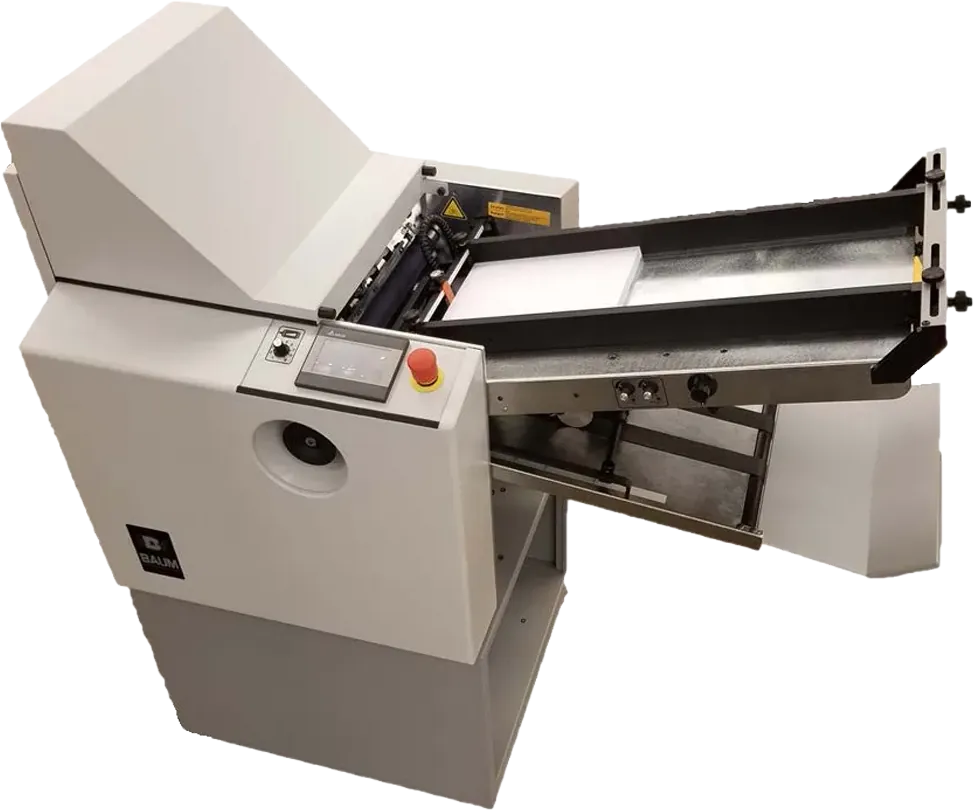
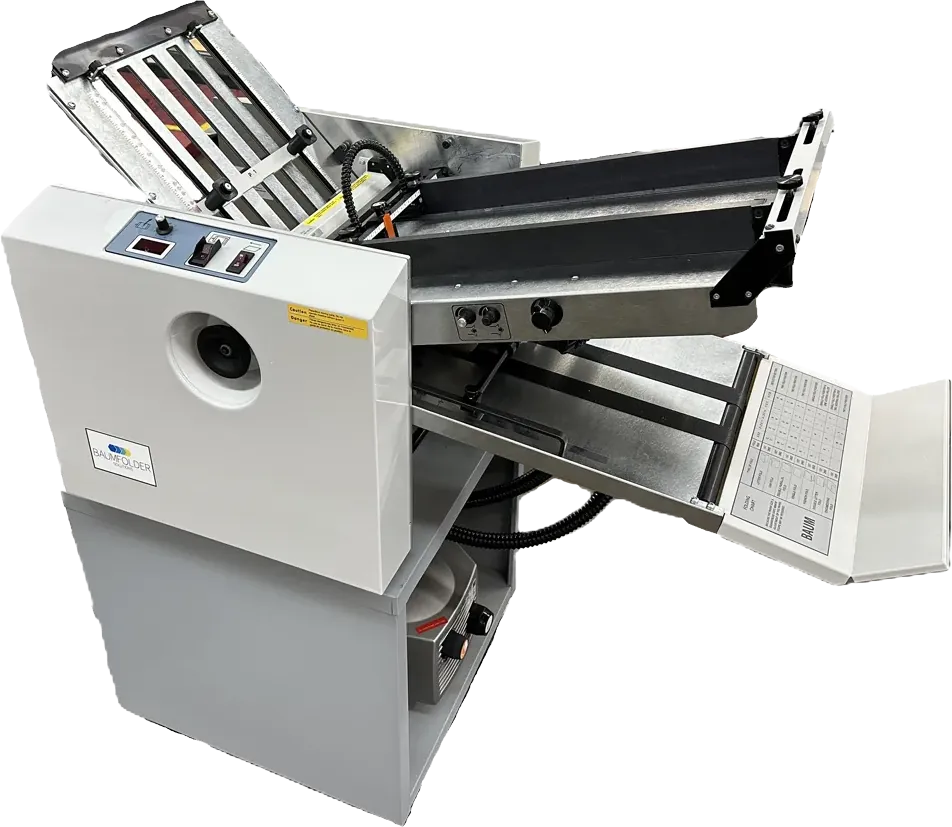
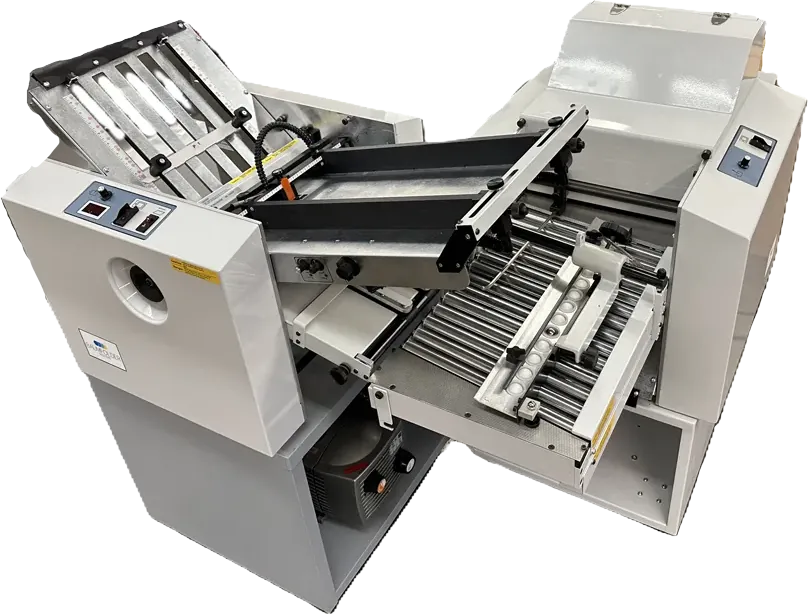
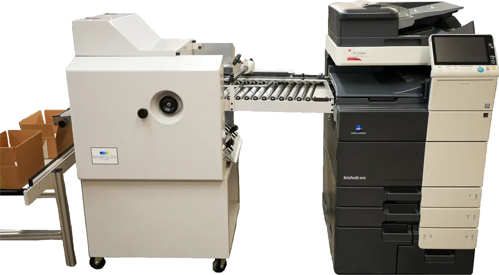
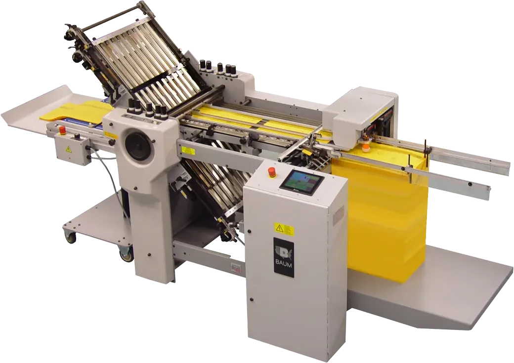
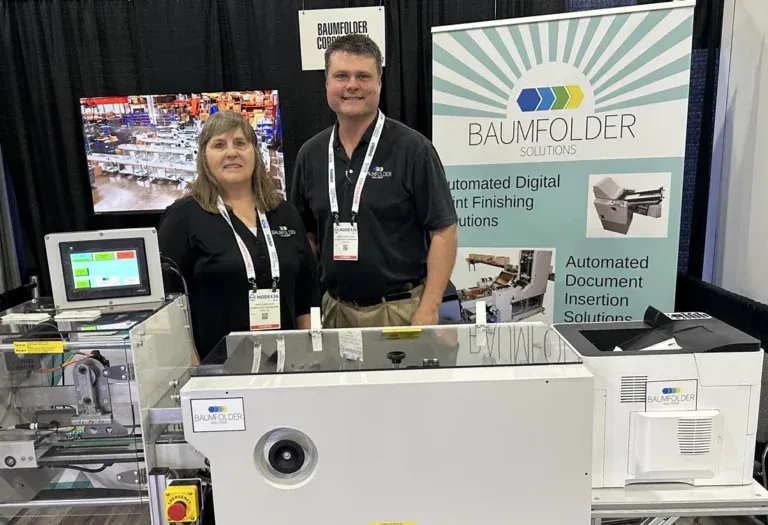

Folding and inserting machines, engineered and built in Sidney, Ohio.
Tabletop and floor model paper folders, document insertion lines for order fulfillment, and specialty folders for parchment, poly bags and cardstock. Quick to set up and built to last.

Start with the fold you need.
Pile feed, continuous feed or inline. Baumfolder has a standard model or a custom build for every run size and material. These are the folds their folders make.
Half fold
Station 1 on the floor model folders.
Letter fold and tab
The BAUM 714 with tabber folds and tabs self-mailers in line, to USPS rules.
Accordion and complex folds
Stations 2 and 3 on the floor models.
8 and 16-page right angle
Cross folds on tabletop station 2 and floor model stations 2 and 3.
Knife fold
The BAUM K20 makes the last fold on bulky booklets, at 180 cycles a minute.
Perforate and score
Compact tabletop station 1 folds, perforates and scores.
Tabletop or floor model.
Desktop, tabletop and floor model folders, gluing systems for self-mailers, and accessories for the tabletop line.
Tabletop folders
The BAUM 714 series: compact folding with perforation and scoring, and an 8-page right-angle second station.



Floor model folders
Half fold at station 1, then 8 and 16-page right-angle, cross, complex and accordion folds. Pile feed or continuous feed.


Get orders out the door with the right paper in every box.
Their newest document insertion solution prints on demand, gathers, folds, verifies the barcode and inserts, alongside your packaging line. Baumfolder engineers, builds and integrates a new line, or re-works an older one, from design to delivery.
- Gather
- Fold
- Verify
- Insert
- Low maintenance and reliable, to cut downtime
- Multiple sheets and multiple carton sizes
- Durable, heavy-duty commercial construction
- Built to maximize cartons per minute
What goes in the box: personalized documents, invoices, packing lists, safety data sheets, return forms, instructions and promotional materials.
When a standard folder can’t handle it, they build one that can.
Baumfolder’s engineering team designs specialty folders around non-standard sizes, complex folds and materials beyond paper. They come with intuitive HMI controls and gear drive systems built to last.
Built for parchment paper, tinfoil, poly bags, Tyvek and cardstock, for pharmaceutical inserts, work instructions, packaging and direct mail.

Poly bag folder
Folds poly bags, Tyvek and paper bags 2 to 5 times for return packaging. Labor savings of 5 to 10 operators, depending on quantity.
Round parchment folder
An IPF feeder and four K14 knife folders fold 10″ round parchment into a 2.6″ square that fits the funnel on the customer’s line.
BAUM 20 in line with unwinder and forms cutter
Unwinds the roll, cuts and folds in one operation: 800,000 to 2,000,000 a month, depending on sheet size and paper.
BAUM K20 knife folder
Runs in line with booklet makers and saddle stitchers. Signatures from 5″ × 7″ up to 20.47″ × 14.17″.
Parts, manuals and people who know the machine.
Get answers quick and reduce downtime. Operator, parts and instruction manuals are online for the BAUM 714 and floor model folders, the ST 90 stitcher, drills, cutters and older folders.
Parts: parts@baumfolder.com
“From feeding, perfing, slitting, scoring, folding/gluing, and stacking, Baum gives us the building blocks to construct multifunctional, equipment lines that give our customers great flexibility and performance.”
OAM, Baumfolder partner

Tell them what you fold. Get a custom quote.
Send the material, sheet size and volume. Baumfolder designs, engineers and builds folding, insertion and contract manufacturing work as a one-vendor partner.
- Phone
- 800.543.6107
- Parts
- parts@baumfolder.com
- Plant
- 1660 Campbell Road
Sidney, Ohio 45365